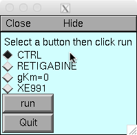
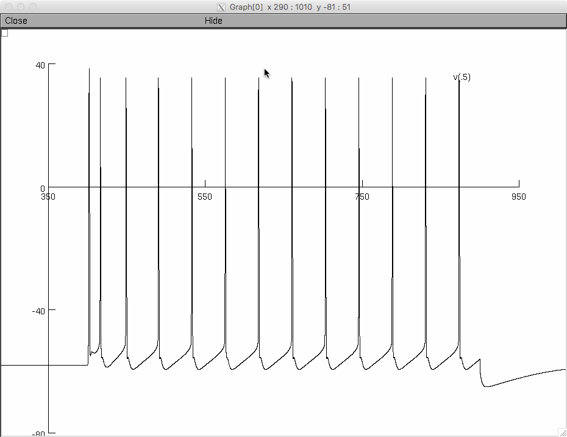
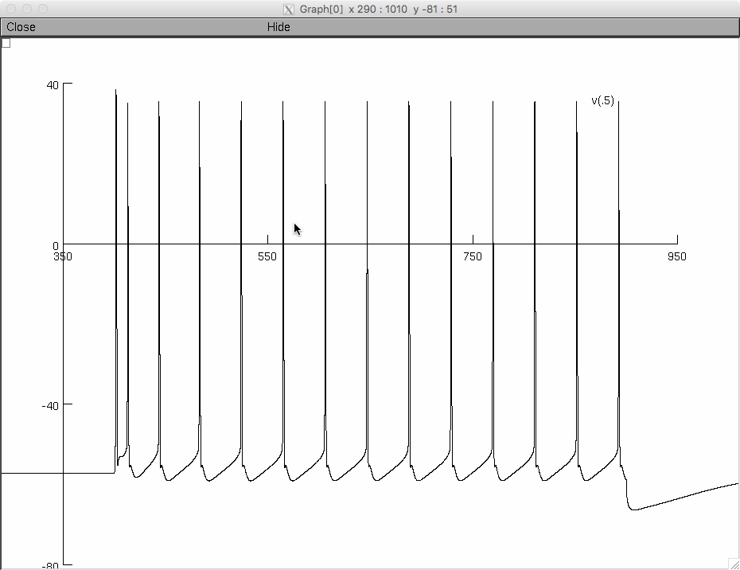
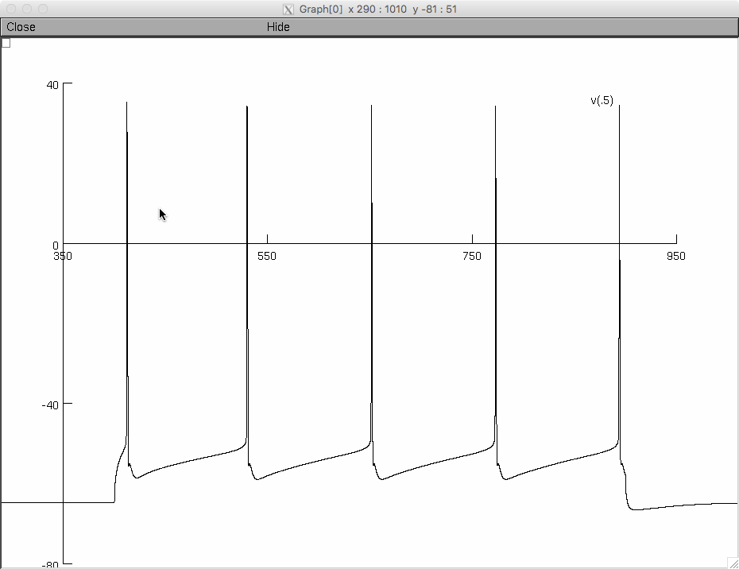
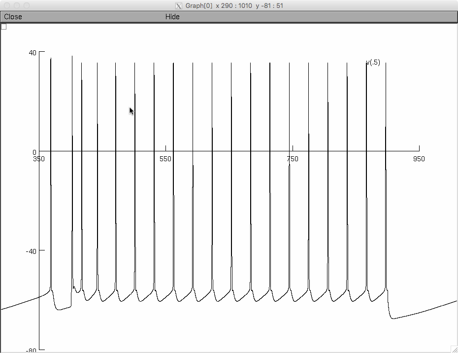

This is the readme for the models associated with the paper:
Lombardo J, Harrington MA (2016) Non-reciprocal mechanisms of up- and
down-regulation of spinal motoneuron excitability by modulators of
KCNQ/Kv7 channels. J Neurophysiol
These NEURON models were contributed by J Lombardo and includes
contributions from previous models available in modeldb (see paper for
details).
Usage:
Either auto-launch from ModelDB or download and extract this archive
and compile the mod files, and then start with
nrngui mosinit.hoc
on the command line for unix/linux or double click on the mosinit.hoc
in file explorer for
mswin. See https://senselab.med.yale.edu/ModelDB/NEURON_DwnldGuide.html
for more details on downloading and running the model.
After the model starts click on one of the buttons in the window

and then the run button.
The CTRL, gKM=0, RETIGABINE, buttons produce (respectively)



similar to Figure 4 in the paper.
XE991 produces the following:

Changelog
- 20220924: Update MOD files to avoid declaring variables and functions with the same name. See https://github.com/neuronsimulator/nrn/pull/1992